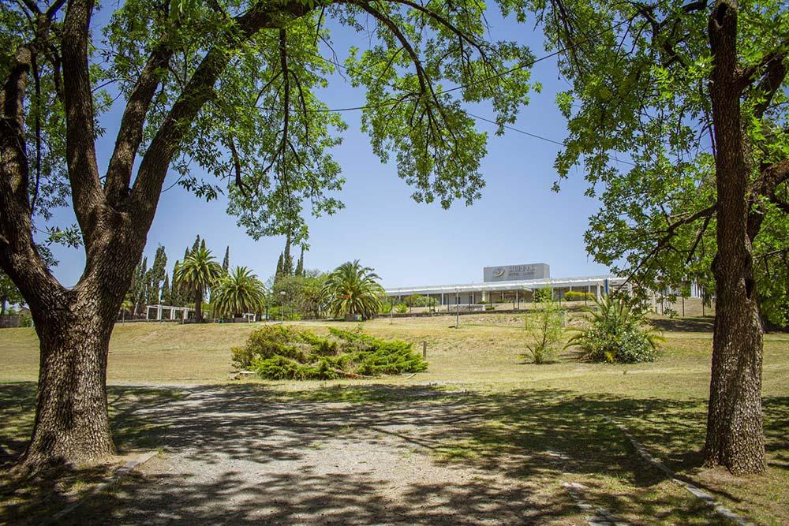

Parque del Sierras Hotel
Camino al Alto y a pocas cuadras del Dique del Tajamar, araucarias, palmeras, ceibos – entre otras especies de arbóreas centenarias pintan de verde la antesala del Sierras Hotel, una construcción majestuosa de estilo inglés de principios del siglo XX inspirada en un hotel de la India Conservando el estilo de la colonización británica. Siendo uno de los primeros hoteles casinos del país, el Sierras se convirtió en hito de la historia turística argentina y albergó a ilustres visitantes de distintas latitudes. En la actualidad, sus jardines son escenario indiscutible para que habitantes y turistas de Alta Gracia disfruten del Aire Libre.